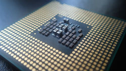

Parts Needed
Okay so at this point you have determined what you need out of your PC and have a good idea on what parts you will need. This page will help breakdown the parts you need as well as provide a breif description of what they are used for.
The main parts are as follows:

The CPU, or Central Processing Unit, is often considered the "brain" or "engine" of your computer. It is responsible for performing all the tasks needed for the PC to function and run programs.
Remember, this is a guide for beginners, more advanced users will be looking into deeper specs with all parts that are beyond the scope of this guide, but this will cover the important things to know.
It is also important to get a CPU cooler if the one you choose doesn't come with one, otherwise you will overheat and cause issues.
Important things to look at for CPUs are as follows:
- Manufactered date
- Manufacturer
- Clock Speeds
- Amount of cores
The motherboard is the backbone of your pc, every other part will connect to your motherboard in some way. The motherboard has a built in user interface called a BIOS which beginners won't need to know, with the exception of a few first time boot up settings. It is VERY important to make sure your motherboard is the right socket type for the CPU, otherwise it will not work.
Motherboards also come in a variety of sizes, so if you want a small form-factor build, be sure to pay attention to the size and make sure it fits your case.
Important things to look at for motherboards are as follows:
- Socket Type
- Form Factor
- Manufacturer
The power supply does what it is named for, supplies power to the system. they come in modular and non-modular forms for cable management. It is important to ensure you have plenty of watts to power all your hardware otherwise you will run into issues.
Important things to look for in power supplies areas follows:
- Wattage
- Rating
- Manufacturer
The hard drive is the component that stores all your data for the PC to read from and write too. Hard drives come in many capacitys and types with different read speeds so it is easy to get confused while shopping. You may be comparing two 1TB hard drives that look the same but one is $20 cheaper, don't be fooled!
The cheaper one could run at a slower speed causing applications as well as the boot up of your PC to take longer. Now there are two types of drives: Hard Disk Drives(HDD) and Solid State Drives(SSD). All you need to know is that any SSD will be very much faster than even the fastest HDD. They cost more but if you have room in youre budget they are highly recomended.
Things to look for in a hard drive are as follows:
- Type (SSD or HDD)
- RPMs(if its an HHD)
- Read and write speeds
- Storage Capacity
Okay so you are looking to do some games or do some video editing. You will definately want to put aside a good chunk of your budget on a graphics card otherwise known as a GPU. Now the great thing about GPUs is there are plenty to choose from. However, this can also make it a little overwhelming. First thing you need to do is decide what kind of performance you want.
There is a lot of competition between low-end, mid-range, and high-end GPUs. If you are looking to play games casually and don't focus too hard on fram rates or benchmarks then a low to mid-range GPU would probably be best. Otherwise you'll have to forkout a pretty penny for a high-end GPU to get the best frames.
Important things to look at for graphics cards are as follows:
- Clock speeds
- Manufactered date
- Manufacturer
- Memory type and capacity
RAM or Random Access Memory, is essentially short-term volitile memory your pc uses to load applications on for quicker use. It's much faster for the CPU to pull information off of RAM than it is to get it from your hard drive, which is why the amount you have can greatly impact your computers performance.
The two main types of RAM in use at the time of making this site is DDR3 and DDR4, with DDR4 being faster. The motherboard you get will determine what type of ram you can use and is stated in the spec sheet of the motherboard. Make sure you do not get RAM that is not compatible with your motherboard.
Important things to look for with RAM are as follows:
- Type
- Capacity
- speed

Here is where you really get to personalize your build! the only thing to really look out for with cases is making sure your motherboard fits. So have fun with it! Find one you think looks cool! Again user reviews are some of the best resources for your case shopping. Things to look for with cases:
- Motherboard compatibility
- Fans
Peripherals are everything you physically interact with for your computer such as keyboards, mice, monitors, and CD drives. This is beyond the scope of this guide so be sure to do your research to find some peripherals that work best for you and your needs.